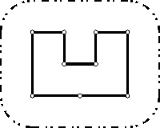

Once upon a time there was a greedy King who ordered his
chief Architect to build a wall around the King's castle. The
King was so greedy, that he would not listen to his Architect's
proposals to build a beautiful brick wall with a perfect shape
and nice tall towers. Instead, he ordered to build the wall
around the whole castle using the least amount of stone and
labor, but demanded that the wall should not come closer to
the castle than a certain distance. If the King finds that
the Architect has used more resources to build the wall than
it was absolutely necessary to satisfy those requirements,
then the Architect will loose his head. Moreover, he demanded
Architect to introduce at once a plan of the wall listing
the exact amount of resources that are needed to build
the wall.
Your task is to help poor Architect to save his head,
by writing a program that will find the minimum possible
length of the wall that he could build around the
castle to satisfy King's requirements.
The task is somewhat simplified by the fact, that the King's
castle has a polygonal shape and is situated on a flat ground.
The Architect has already established a Cartesian coordinate
system and has precisely measured the coordinates of
all castle's vertices in feet.
Input
The
first line contains two integers N and L separated by a space. N (3 ≤ N
≤ 1000) is the number of vertices in the King's castle, and L (1 ≤ L ≤
1000) is the minimal number of feet that King allows for the wall to
come close to the castle.
Next N lines describe coordinates of castle's vertices in a clockwise order. Each line contains two integers Xi and Yi separated by a space
(-10000 ≤ Xi, Yi ≤ 10000)
that represent the coordinates of ith vertex.
All vertices are different and the sides of the castle do
not intersect anywhere except for vertices.
Output
Write the single number that represents the minimal possible length of the wall in feet that could be
built around the castle to satisfy King's requirements.
You must present the integer number of feet to the King,
because the floating numbers are not invented yet. However,
you must round the result in such a way, that it is
accurate to 8 inches (1 foot is equal to 12 inches),
since the King will not tolerate larger error in
the estimates.
Sample
| input | output |
|---|
9 100
200 400
300 400
300 300
400 300
400 400
500 400
500 200
350 200
200 200
| 1628
|
Problem Author: Sergey Volchenkov, Roman Elizarov
Problem Source: 2001-2002 ACM Northeastern European Regional Programming Contest